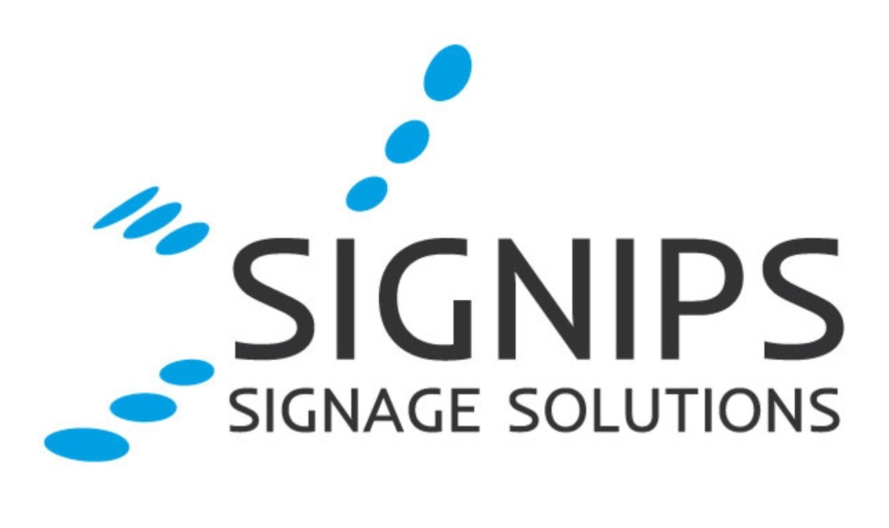

Projectplan
Simac - groepsproject
Filter bij categorie
Projectplan

Brainstormen

Library research

Prototyping (mijn ontwerpen)

Eisenlijst

Technisch onderzoek

Expert interview

C4-model

POC
Prototyping (groep)

Gebruikerstest

Adviesverslag

Weekverslag

Sprint retrospect

Peer-to-peer feedback

Reflectie
Investigative problemsolving
In het begin van ons project hebben mijn groep en ik een projectplan opgesteld om de richting van ons project vast te leggen en afspraken te maken.
Onze groep heeft de naam "Uplifting Onion" gekozen, als suggestie van ChatGPT.
In de huidige werkcultuur worden werknemers voornamelijk aangesproken op fouten, in plaats van op hun successen. Simac heeft als doel om dit te veranderen en zo enthousiasme en motivatie onder hun werknemers te bevorderen.
Initieel wilde Simac daarom een systeem om complimenten onder hun werknemers te bevorderen. Tijdens mijn onderzoek kwam ik echter al snel achter dat het stimuleren van motivatie juist belangrijker is. Complimenten hebben namelijk weinig effect als motivatie laag is.
Na overleg met Simac over het aanpassen van de opdracht, werken we aan een systeem om de motivatie van de werknemers bij Simac te verhogen.
In de projectgroep van 6 werk ik samen om de intentie van Simac te realiseren. Gedurende het project ben ik bezig met onderzoek, en het verkennen van verschillende oplossingen en relevante onderwerpen om bij een effectieve oplossing te komen.
In de team hebben we een Trello gemaakt om onze taken te plannen,
en bij te houden wat we nog moeten doen voor de toekomst. Het
projectplan is ingedeeld volgens de Double Diamond:
- Discover: Veel ideeën creëren en onderzoeken
- Define: Alle ideeën en onderzoeken omzetten in een solide
concept
- Develop: Onderzoek en creëer veel ideeën voor de concepten
- Deliver: Neem een paar ideeën die belangrijk zijn en werk die
uit tot het uiteindelijke product.
Samen met mijn team deden we dagelijks een dagelijkste stand-up om elkaars plannen voor de dag, problemen en taken van gisteren te bespreken. Naast een presentator is er ook een notulist die alle informatie opschrijft in een document. Elke dag worden de rollen geroteerd zodat iedereen een rol hierin speelt.
📄 Document van projectplanVoor het project hebben de hoofdvraag bedacht over hoe we positieve feedback in de vorm van erkenning en waardering kunnen stimuleren onder SIMAC's werkomgeving. Daarbij hebben we een aantal deelvragen bedacht over verschillende methodes die daarbij zouden kunnen helpen, waarop we die valideren op de effectiviteit met onderzoek.
Goal-oriented interaction
In week 1 hebben we samen gebrainstormd naar welke aspecten motivatie bevorderd, aangezien SIMAC een complimentensysteem wil voor die reden. Wat we hebben besproken, hebben we in een mindmap gezet om een duidelijk overzicht te hebben.
We onderzochten naar de verschillende soorten motivaties en hoe die bevordert worden, zodat we goed begrijpen hoe we die opppakken voor ons project. Naast de positieve bevorderingen en soorten motivaties om de oorzaak te begrijpen, heb ik ook onderzocht wat motivatie juist verminderd om die problemen mogelijk aan te pakken in ons project. Uit mijn onderzoek bleek dat een lage motivatie op het werk zorgt dat complimenten juist weinig effect heeft. Een complimentensysteem heeft daarom weinig nut omdat het weinig de achtergrond van de werknemers aanpakt.

Na overleg met SIMAC over ons onderzoek hebben we besloten ons te richten op het stimuleren en verhogen van de werknemersmotivatie. In samenwerking met de groep onderzocht ik naar diverse methoden om motivatie te stimuleren, en elk ons eigen onderzoeken gedaan om te presenteren aan SIMAC. Hiervan is meer te lezen in "Library research: Motivatie".
Nadat we weten hoe motivatie ontstaat, hebben we intensief gebrainstormd over een systeem om dit in werking te brengen in SIMAC. We hebben ideeën gegenereerd in fases van 1 minuut, waarbij we ze opschreven op plaknotities en op het whiteboard hingen. Na elke fase hebben we gestemd op de top 3 ideeën die iedereen had, en herhaalden we het proces op dezelfde manier.
Na een aantal fases kwamen we uit op enkele ideeën:
- Continous learning
- Creative come together
- Narrowcasting
- Social rooms
- Wall of Appreciation
Hierna heeft ieder teamlid zijn eigen onderzoek gedaan naar een onderwerp om het te valideren, en kijken of we ermee iets kunnen doen in het project. Ik onderzocht naar Continuous Learning, en hoe het motivatie onder werknemers kan bevorderen. Hierover is meer te lezen in 'Library research: Continous Learning'.
Tijdens de brainstormsessies hebben wij ieder verschillende ideeën bedacht die mogelijk werknemerserkenning en motivatie zouden kunnen ondersteunen. Uit iedere sessies kiezen we een paar ideeën uit om onderzoek over de effectiviteit en implementatie in de werkomgeving ervan. Alle informatie worden gecompileerd in een document met bronnen.
Van de ideeën die voortkwamen, is er uiteindelijk besloten om met narrowcasting verder te werken als richting voor het project. Meer hierover is te lezen in "Library research: Narrowcasting".
We hebben samen gebrainstormt naar allerlei ideeën die zouden kunnen helpen met het stimuleren van meer motivatie. Hierbij hebben we verschillende methodes gebruikt om op nieuwe ideeën te komen.
Investigative problem solving
Tijdens het project heb ik meerdere keren onderzoek gedaan om op nieuwe ideeën te komen of informatie voor bevestiging te verzamelen.
In mijn eerste onderzoek, samen met mijn teamgenoot Luke, heb ik gezocht naar verschillende manieren om motivatie op de werkvloer te stimuleren. We wilden hiermee de aanname van SIMAC uitdagen en onderzoeken of er meer is dan alleen complimenten als het gaat om motivatie. Tijdens ons onderzoek hebben we gekeken naar verschillende methoden die kunnen helpen om de motivatie te verhogen en te behouden in de werkomgeving.
Van het onderzoek heb ik vastgesteld dat motivatie zowel fysiek op de werkvloer als op andere vlakken kan worden bevorderd. Dit omvat niet alleen een schone en georganiseerde werkomgeving, maar ook aspecten zoals teambuilding en het gezamenlijk vieren van prestaties. Een combinatie van fysieke en niet-fysieke factoren kan dus een positieve invloed hebben op de motivatie van medewerkers.
📄 Document van Motivatie stimulatieNadat we onze bevindingen presenteerde aan SIMAC, hebben we ook gevraagd om meer duidelijkheid te geven over de opdracht en/of ze zelf een complimentensysteem hebben. Uit de antwoorden bleek dat Simac nog geen eigen complimentensysteem heeft, omdat het normaal is in Nederlandse werkcultuur om werknemers niet te complimenteren. Als team besloten we daarna om een richting voor het project te zoeken met de informatie die we nu van Simac hebben gekregen. Hierover is meer te lezen in "Brainstormen: Ideeën genereren".
Nadat er meerdere richtingen waren bedacht voor het project, koos ik om over het onderwerp Continous Learning te onderzoeken, en hoe leren op zowel binnen als buiten werk kan bijdragen aan het bevorderen van motivatie en het bedrijf. Tijdens het brainstormen kreeg ik het idee over workshops in Simac om medewerkers te stimuleren hun kennis aan anderen te delen, en dus meer voldoening en motivatie te krijgen.
Van het onderzoek kwam uit dat voortdurend leren is niet alleen goed voor de beroepsbevolking en het privéleven, maar ook noodzakelijk is om relevant te blijven in voortdurend veranderende wereld. Naast werkgerelateerde vaardigheden zijn ook andere hobby's en creatieve bezigheden bevorderlijk voor de werkprestaties, het creatief denken en herstellen van de werkdruk.
Meer details heb ik in een document gezet:
📄 Continuous learningNa het presenteren van mijn onderzoek aan Simac, heb ik een follow-up onderzoek uitgevoerd om meer informatie te verzamelen van het vorige onderzoek. Tijdens het vorige onderzoek las ik over Google en hun beleid waarin werknemers worden aangemoedigd om 20% van hun werktijd te besteden aan persoonlijke projecten om hun motivatie te versterken. Ik onderzocht hierop meer over het leren van nieuwe vaardigheden tijdens werkuren, en hoe het bevorderd kan worden in het bedrijf.
Daarbij heb ik meerdere methodes ontdekt waarin het mogelijk is:
- Werknemers 20% van hun werkweek laten besteden aan hun
persoonlijke project, of wanneer de taken klaar zijn
- Samen leren over nieuwe technologie die gebruikt worden voor
nieuwe (zakelijke) projecten
- Trainingen en workshops aangeboden door SIMAC of de werknemers
zelf
Na het presenteren van ons follow-up onderzoek aan SIMAC, hebben we een korte peiling gehouden om te bepalen aan welk idee we verder gaan werken. We hebben daarbij gekeken naar de kosten, de vereiste inspanning, de beschikbare ruimte in het kantoor en mogelijke verstoringen voor de werknemers die de ideeën opleveren.
Uiteindelijk hebben we besloten om voor narrowcasting te kiezen, waarbij verschillende soorten informatie worden getoond op TV-schermen op verschillende locaties in het kantoor. Dit besluit is genomen vanwege het feit dat SIMAC al TV-schermen heeft hangen in hun kantoor, waardoor dit het minst kosten en moeite vereist om het toe te passen in hun werkomgeving. Bovendien zijn alle ruimtes in het kantoor al in gebruik voor zakelijke doeleinden, waaraan SIMAC zoveel mogelijk tijd wil besteden.
Het idee van narrowcasting kwam voort door een eerdere onderzoek 'Wall of Appreciation' door andere studenten in mijn groep, Maarten en Merlijn. Het onderzoek gaat over een manier om een communicatiesysteem te implementeren, die relevante informatie over het bedrijf en zijn werknemers weergeeft. Omdat schermen op de muren opvallender zijn, is het makkelijker om positief te communiceren met de werknemers.
Na het besluit heeft iedereen zijn eigen onderzoek gedaan naar narrowcasting om ideeën te bedenken. Ik onderzocht zelf naar narrowcasting en hoe het kan worden gebruikt om motivatie en erkenning te stimuleren in de werkveld. Van de informatie ontwierp ik vervolgens mock-ups.
Narrowcasting is het weergeven van informatie op digitale borden voor een specifiek publiek, i.p.v. een breed publiek. Hoewel narrowcasting vaak wordt gebruikt op televisienetwerken, wordt het ook binnen bedrijven gebruikt voor het weergeven van bedrijfsinformatie. Dit kan algmene informatie zoals het weer zijn, maar ook specifiekere zoals over het omzet van het bedrijf en werknemers.
Hoewel er 'narrowcasting' aanwezig is in SIMAC met digitale
borden, weergeeft het alleen algemene nieuws zoals over het
bedrijf en het weer. De idee hierop is om meer schermen te laten
zien die meer te maken hebben met de werknemers van SIMAC, zoals:
- Verjaardagen
- Recente prestatie(s) van team/afdeling
- Informatie over Simac en haar afdelingen
Mensen voelen erdoor meer erkend voor hun werk als ze zien dat hun
prestaties worden weergegeven op de digitale borden. Mensen zelfs
buiten de team kunnen de werknemers dan aanspreken om te
feliciteren of een gesprek aan te gaan. Dit zorgt niet alleen voor
erkenning, maar ook voor motivatie om aan toekomstige projecten
verder te werken en werktevredenheid.
Aangezien niet iedereen altijd fysiek aanwezig kan zijn op kantoor vanwege verschillende redenen, heb ik ook gedacht aan een mobiele app die dezelfde informatie biedt als de digitale borden. Om het aantrekkelijker te maken en mensen te stimuleren de app te installeren, bevat deze ook gedetailleerdere informatie over onderwerpen die niet volledig op de digitale borden worden weergegeven vanwege tijdslimiet en ruimte van de schermen.
Digitale borden en een mobiele app kunnen dus mogelijke ideeën zijn om de herkenning te betrekken bij narrowcasting in Simac. Een digitale bord toont actuele content voor werknemers, terwijl een mobiele app hetzelfde doet, behalve fysieke aanwezigheid niet verplicht is en meer gedetailleerde informatie toont.
Meer hierover is te lezen in de document "Narrowcasting onderzoek".
📄 Narrowcasting onderzoekOver de prototypes is in de module "Prototyping" meer informatie erover.
In het begin van het project heb ik samen met de groep verschillende onderzoeken gedaan op nieuwe ideeën en de validering ervan. Ik heb in totaal drie onderzoeken gedaan waarna ik mijn bevindingen presenteerde aan SIMAC en de groep, waarna we uiteindelijk allemaal kozen voor narrowcasting en onze eigen onderzoek op deden.
Na de afronding ervan hebben allemaal onze eigen onderzoek over onze bevindingen, ideeën en mock-ups gebruikt, om te onderzoeken over specifieke aspecten van de narrowcasting en ontwerpen te maken op basis van de informatie die we hebben. Ook hebben we een lijst opgesteld waarin we voortaan in het project willen focussen, en welke niet (zie "Eisenlijst").
Over mijn specifieke narrowcasting onderzoek is te lezen in "Techinisch onderzoek" en "Expert interview".
Voor elk onderzoek dat ik uitvoerde, formuleerde ik een onderzoeksvraag. Vervolgens zocht ik naar verschillende online bronnen om de vraag te beantwoorden. Ik documenteerde de verkregen antwoorden in een document.
User interaction (analysis and advice)
Nadat narrowcasting werd gekozen voor het project in het team, hebben we allemaal onze eigen onderzoek gedaan waarvoor we mock-ups maken om op nieuwe ideeën voor de narrowcastingsysteem te komen. Ik heb hierbij onderzoek gedaan over narrowcasting om het ook te begrijpen, en daarna mock-ups gemaakt voor zowel tv-schermen en een mobiele applicatie. Dit om mijn ideeën visueel te maken, en kijken wat wel of niet werkt.
Voor beide ontwerpen gebruikte ik SIMAC's Corporate identity
handleiding, hun bestaande narrowcasting templates en de officiele
website en om ontwerpen te maken die consistent is met Simac. In
de handleiding zijn er enkele ontwerpkeuzes waarmee Simac zich
herkenbaar maakt:
- Afgeronde hoek links of rechts onder een afbeelding of vak
- Gebruik van gradient met donkerblauw en rood voor achtergronden
- Gebruik van de Geogrotesque font voor headers
- Gebruik van de Open Sans font voor normaal tekst
- White mode
Voor de narrowcastingsysteem heb ik verschillende schermen gemaakt die, naast algemene informatie zoals nieuws en planningen, ook de focus geeft aan werknemers afhankelijk van de situatie. Hierin worden verjaardagen en bereikte mijlpalen binnen Simac. Gesprekken worden onder werknemers makkelijker geïniteerd om erover te praten met anderen zoals een felicitatie, waardoor er een sterkere band wordt gevormd binnen Simac.
Omdat niet iedereen (altijd) fysiek op werk kan zien om wat voor reden dan ook, dacht ik ook over een mobiele app die hetzelfde functioneert als de narrowcastingsysteem. Om extra waarde toe te voegen, heeft het ook een nieuwsfeed waarin gebruikers artikelen kunnen lezen die niet geheel kunnen worden getoond op een TV-scherm.
Voor de UI heb ik inspiratie genomen van andere nieuws apps, aangezien de app dezelfde inhoud moet weergeven als de narrowcasting waarop veel nieuws weergeven is. De meeste hebben een navigatiebar beneden de scherm, met de belangrijkste nieuws als eerste die de gebruiker ziet, met onderin andere artikelen. Sommige apps hebben ook een hamburger menu aan de zijde voor b.v. instellingen of andere app-functies zoals filtering.
Ook voor de mobiele app hanteerde ik aan Simac's huisstijl, met gebruik van hun blauw-rode gradient, onderste afgeronde hoek en lichtmodus. Voor de weergave van de nieuwsartikelen heb ik gekopieerd van Simac's blog op hun website: Een afbeelding met eronder een kop en datum van publicatie met een wit achtergrond.
Van mijn groep kreeg ik positieve feedback op mijn mock-ups op het ontwerp, idee van de schermen (vooral de scherm voor de lunchmenu en vacatures), de mobiele app. Het enige feedback, was dat de navigatiebar een andere stijl moest hebben om het meer modern uit te zien. Hiervan heb ik meerdere iteraties gemaakt op de kleuren met behulp van Simac's Corporate identity handleiding. De bar is ook afgerond en zwevend om een moderne uitstraling te geven, en minder ruimte van de scherm in beslag te nemen.
In de boventste balk zijn de hamburgermenu om overige opties van de app te openen zoals instellingen, en een notificatiebel om de laastse nieuws te krijgen.
Van de semestercoach Bardt kreeg ik hierop feedback dat ik niet zoveel aandacht moet besteden aan de kleine aspecten zoals een navigatiebar, en meer op het gehele concept.
Alle prototypes zijn te vinden in de Figma link.
🎨 Figma prototypesAls deel van mijn onderzoek naar narrowcasting heb ik mijn eigen mock-ups gemaakt om mijn ideeën voor de templates te visualiseren en presenteren aan de groep.
Na het presenteren van mijn mock-ups is er wel besloten om een paar ideeën te nemen, zoals verjaardagen en tonen van bereikte doelen van teams, maar niet de ontwerpen aangezien we ons ook wilden richtten om de templates van SIMAC te herontwerpen. De andere ideeën, zoals nieuws, hadden niets te maken hebben met werknemererkenning en werden ook geschrapt.
De volgende iteratie ontwerpen zijn te vinden in "Prototyping (groep)".
Ik heb onderzoek gedaan naar narrowcasting om het concept beter te begrijpen en ben vervolgens mock-ups gaan ontwerpen op basis van die informatie. De mock-ups zijn gebaseerd op SIMAC's officiële ontwerpen. Bij het maken van de mobiele prototypes heb ik ook rekening gehouden met werknemers die niet regelmatig fysiek op kantoor kunnen werken om welke reden dan ook, zodat zij ook over hun collega's kunnen lezen.
User interaction (analysis and advice)
Goal-oriented interaction
In week 5 hebben we als team een eisenlijst opgesteld om te bepalen op welke aspecten van narrowcasting we ons moeten focussen, en welke niet relevant zijn voor ons project.
Waar we vooral wilden focussen is op schermen die direct erkenning geeft aan werknemers of afdelingen binnen Simac, zoals een jubileum, nieuwe werknemers, etc. Ook praktische overwinningen zoals bereikte doelen door een werknemer of team worden weergeven om eer te geven. Zo worden mensen en hun prestaties meer gezien binnen Simac, en worden ze erop meer gemotiveerd op werk.
Waar we liever niet op willen focussen, zijn templates die weinig of geen betrekking hebben op de werknemers. Dit omvat met name algemene informatie zoals SIMAC-nieuws, cafetaria-updates en dergelijke. Deze zijn niet gerelateerd aan de opdracht om erkenning te stimuleren, en we gaan ons daarom ook niet erop richtten.
Op basis van de opgestelde eisenlijst weten we nu welke soorten templates belangrijk zijn om te ontwikkelen en welke we het beste kunnen vermijden. Dit helpt ons in de juiste richting van het project te blijven, en zo min mogelijk onrelevante producten te maken.

Ons doel was om ons te concentreren op het maken van templates die volledig gericht zijn op de werknemers, met als doel maximale erkenning te stimuleren. Templates die meer algemeen nieuws bevatten, zoals het nieuws in het algemeen, voldoen niet aan dat doel en worden al uitgezonden binnen SIMAC.
Als groep hebben we samen besproken over wat we moesten focussen voor de opdracht, en welke beter weggelaten konden. Hierbij wilden we enkel focussen op templates die geheel over de werknemers van SIMAC gaan.
Goal-oriented interaction
Investigative problem solving
Future oriented organisation
Ik heb het technische aspect van narrowcasting onderzocht om meer inzicht te krijgen in de opzet en werking ervan, en om te bepalen hoe we onze ideeën erop kunnen implementeren. Mijn onderzoek omvatte het verkennen van verschillende platforms, vereiste programmeertalen en andere relevante bronnen over narrowcasting.
De rest van mijn groep waren bezig met het onderzoeken van de het ontwerp -en inhoudaspect. Meer hierover is te lezen in "Prototyping (groep)".
Naast library onderzoek heb ik ook gevraagd aan twee externe
personen om specifieke informatie te krijgen:
- SignIPS, een Nederlandse bedrijf dat gespecialiseerd is in
narrowcasting
- Management van Simac over hun narrowcasting systeem in het
kantoor van Simac
Tijdens het onderzoeken naar de technische details van narrowcasting, kwam ik echter een paar onduidelijkheden tegen waarvan ik online de antwoorden niet kon vinden. Om toch de antwoorden te krijgen, heb ik mijn vragen gestuurd aan SignIPS om zoveel mogelijk informatie te krijgen. Omdat ik al de meeste informatie over narrowcasting heb kunnen vinden, gaan mijn vragen enkel over de kleinere details.
Meer informatie en conclusie hiervan is te vinden in "Expert interview".
Om te weten hoe Simac hun narrowcastingsysteem gebruikt, heb ik de verantwoordelijke Erwin van de Schoot een e-mail gestuurd met technische vragen. Vanwege de planning was het helaas niet mogelijk om een fysieke interview te doen. Ik stelde vragen omtrent welke schermen Simac gebruikt voor hun castingsyseem, en of er schermen zijn die over specifieke werknemers gaan.
Van de antwoorden die ik terugkreeg, kwam uit dat Simac de narrowcastingservice LeftClick gebruikt om hun inhoud te presenteren, vanwege het simpele gebruik. De TV-schermen hangen op plaatsen waar werknemers vaak komen om de boodschappen goed te laten zien, zoals een koffiehoek.
De templates van Simac zijn vooral voor het weergeven van nieuws binnen Simac of andere nieuwsbronnen over veiligheid, het weer, etc. Voor werknemerserkenning heeft Simac alleen een scherm voor werknemers die voor een bepaalde tijd werken voor Simac (12.5, 25 jaar). Op basis van deze antwoorden, kunnen er wel degelijk meer templates worden getoond die zich over specifieke werknemers, teams of bereikte doelen gaan.
Van de interviews met SIMAC heb ik meer inzicht kunnen krijgen welke soorten templates SIMAC cast in hun kantoor. De informatie heb ik dan gedocumenteerd en gepresenteerd aan de groep, waarop ik op wees op het gebrek vam templates die specifiek over de werknemers gaan. Hiermee weet mijn groep hoe we verder met onze project verder moeten voor de templates, namelijk meer narrowcasting templates ontwerpen over verschillende onderwerpen behalve voor de jubileum van werknemers.
De templates die uiteindelijk zijn ontworpen voor SIMAC als eindresultaat staan in "Prototyping (groep)".
Mijn onderzoek, vragen en antwoorden heb ik allemaal in documenten
gezet:
Ik heb via e-mail met de stakeholders gecommuniceerd om antwoorden te krijgen op mijn vragen over hun huidige narrowcastingsysteem. Dit hielp om te begrijpen welke templates we moesten ontwerpen om toe te voegen aan het systeem van SIMAC.
Goal-oriented interaction
Future oriented organisation
Tijdens het technische onderzoek kwam ik enkele onduidelijkheden tegen waarvoor ik geen antwoord kon vinden, ondanks uitgebreid onderzoek. Omdat het belangrijk is om een grondig begrip van narrowcasting te hebben om onze ideeën effectief te implementeren en mogelijke technische problemen aan te pakken, heb ik mijn vragen voorgelegd aan een expert van een narrowcasting bedrijf SignIPS.
SignIPS is een Nederlands bedrijf dat zich specialiseerd in digitale borden in de commerciële sector. Het werkt zowel met kleine als multinationals samen om effectief communicatie te creeëren voor de juiste doelgroep. SignIPS werkt met een maandelijkse subscriptie-plan per speler, die een eenvoudig te gebruiken CMS heeft en krachtige specs heeft.
Voor het onderzoek vroeg ik SignIPS over bepaalde aspecten van narrowcasting waar ik niet conclusief een antwoord kon vinden. Later kreeg ik de antwoorden terug:
- Hoe ziet een CMS voor narrowcasting er typisch uit?
"Er is
geen "typisch" CMS voor digital signage, als je een beter begrip
wilt krijgen van hoe dit eruit zou zien, stel ik voor om
verschillende digital signage systemen te downloaden en te
analyseren, aangezien er veel gratis systemen op het internet te
vinden zijn. Dit zou je een beter inzicht geven in hoe deze
systemen werken."
- Hoe ziet een player eruit?
"Spelers zien er meestal uit
als een klein kastje, iets dat je bijvoorbeeld op je eigen tv zou
bevestigen. De spelers die wij gebruiken of hebben gebruikt zijn
de Minix media Player en de ODROID-N2. Dit geeft een goed idee van
hoe een speler er meestal uitziet."
- Hoe kan een player worden aangesloten op een TV-scherm aan de
muur met HDMI?
"We gebruiken onze eigen op maat gemaakte
steunen. Maar je kunt ook gewone steunen gebruiken als ze passen.
Anders hebben we ook mensen gezien die het gewoon met een
kabelbinder oplossen."
Deze was al beantwoord in een later onderzoek door anderen en
mijzelf voordat ik de antwoorden kreeg;
- Wat zijn de instructies om narrowcasting te implementeren? Hoe
implementeer je het voor meerdere schermen?
Er is één speler nodig voor elk scherm om te narrowcasten. Bijv.
voor 5 schermen zijn 5 aparte players nodig. Afbeeldingen en
video's kunnen worden geüpload naar de spelers met behulp van
software van het digital signage bedrijf.
Vanwege het antwoord van SignIPS over een 'typisch' CMS, heb ik kort onderzoek gedaan door verschillende (gratis) narrowcasting services uit te proberen en te vergelijken. Dit gaf me de mogelijkheid om de daadwerkelijke verschillen tussen deze services te ervaren en eerste inzichten op te doen.
Omdat er zoveel verschillende narrowcasting services zijn, heb ik besloten om alleen drie met elkaar te vergelijken; DigitalSignage.com, OptiSigns en Opensignage. Ik kwam op deze uit, omdat ik me makkelijk kon aanmelden om de services te gebruiken. De meeste anderen vereisen bedrijfsgegevens, een betaald plan of contact met het bedrijf om toegang te krijgen tot de service.
Ik testte de services uit om hun proces van aanmelden tot casten te bekijken. De meest voorkomende stappen ervan, waarvan ik heb onderzocht in het technische onderzoek, heb ik in chronologsiche volgorde in een tabel gezet. Hiermee vergelijk ik de drie services met elkaar.
Van de testen en resultaten die eruit kwamen, heb ik inderdaad gemerkt dat er een verschil is tussen de narrowcasting services ondanks dat ze allemaal hetzelfde doel uitvoeren. Een duidelijk voorbeeld, is hoe DigitalSignage.com compleet werkt op het web, terwijl de anderen software vereisen om te casten.
Door het uitproberen en vergelijken van verschillende narrowcasting services kreeg ik meer inzicht in de verschillende manieren waarop narrowcasting werkt. Dit heeft mijn technische onderzoek verder kunnen valideren en ondersteunen, aangezien ik nu praktische ervaring had met de implementatie en functionaliteit van deze systemen.
Om onduidelijkheden in mijn technische onderzoek te beantwoorden, heb ik mijn vragen over de technische details gestuurd naar SignIPS om antwoorden te krijgen. Omdat ik al veel algemene informatie voorheen heb gevonden, stelde ik alleen vragen over de kleine technische details.
Ik stelde hierdoor vragen over:
- Hoe een player eruit ziet, en hoe die verbonden kan worden aan
wandgemonteerde TV-schermen
- Hoe een 'typische' CMS systeem eruit ziet
Een player ziet er normaal uit als een kleine kastje die verbonden kan worden aan de TV. Voor verbinden aan wandgemonteerde TV-schermen gebruikt SignIPS normaal zijn eigen monturen, maar commerciële monturen of tiewrap helpen ook.
Voor de 'typische' CMS geeft SignIPS aan dat dat niet bestaat, en gaf het advies om een aantal narrowcasting software te proberen om meer inzicht te krijgen van hoe het werkt. Omdat er zoveel verschillende narrowcasting services zijn, heb ik enkel drie gepikt om te vergelijken; DigitalSignage.com, OptiSigns en Opensignage.
Na het uitproberen van de verschillende narrowcasting services heb ik ervaren dat, ondanks dat ze allemaal hetzelfde doel hebben, verschillende processen en functies hebben van elkaar. Ik heb hierdoor een betere begrip van de verschillende types van narrowcasting services, waarmee ik mijn technische onderzoek verder kan valideren en ondersteunen.
📄 Document Technische antwoorden van SignIPSOm onduidelijkheden in mijn technisch onderzoek op te helderen, heb ik contact opgenomen met een deskundig narrowcasting bedrijf. Door middel van hun expertise kon ik aanvullende informatie verkrijgen, waardoor ik mijn technisch onderzoek beter kon ondersteunen.
Na het ontvangen van het antwoord van SignIPS dat er geen typisch narrowcasting CMS bestaat, heb ik verder onderzoek gedaan door verschillende producten met elkaar te vergelijken. Uit de resultaten van mijn onderzoek blijkt dat SignIPS gelijk had, omdat ieder product verschillende processen en functies hebben dan de anderen.
Software design
Goal-oriented interaction
Samen met de groep heb ik een C4-model van de narrowcasting systeem gemaakt, om de systeem te visualiseren in duidelijke diagrammen i.p.v. enkel tekst zoals mijn onderzoeksdocuement. Een C4-model is een techniek om de architectuur van software te visualiseren en modelleren. Normaal bestaat een C4-model uit vier verschillende grafieken, maar omdat het nog onduidelijk was of we wilden coderen voor het eindresultaat, hebben we de eerste drie modellen gemaakt om de werking en proces van de narrowcastingsysteem te visualiseren.
Omdat ik eerder technische onderzoek heb gedaan, controleerde ik of de technische aspecten correct waren en ontbrekende informatie kunnen invoegen indien van toepassing.
Deze simpele diagram beschrijft hoe de de werknemer voor de narrowcasting de informatie in de systeem te voeren, die dan vervolgens de informatie laat zien aan een werknemer van SIMAC. Dit is de algemene geheel van het systeem om de relatie tussen gebruikers laat zien.
Deze diagram weergeeft meer gedetailleerde informatie over de narrowcastingsysteem en de technische werking ervan. De gebruiker moet eerst online inloggen in de software voor narrowcasting service om informatie in te voeren. Zodra de informatie is ingevoerd, stuurt de software het naar een database. Vanuit de database wordt de informatie in de templates gezet, en doorgestuurd naar de speler voor de digitale borden om de schermen te tonen aan de werknemers.
In de diagram wordt de informatieverwerking van de invoersysteem naar de narrowcastingsysteem gebeeldt. De gebruiker voert de benodigde gegevens van allerlei onderwerpen apart in om weer te geven voor de schermen, waarna die naar een database worden gestuurd. De software communiceert met de database om de data op te halen, in de schermen te verwerken, en die dan afspeelt in een reeks.
Met deze modellen hebben we nu visuele diagrammen van de technische werking van narrowcasting, waarmee we een dieper begrip van de narrowcastingsysteem hebben en makkelijker onze project verder kunnen oriënteren op basis van de informatie. Hiervan hebben wij POC's (proof-of-concepts) gemaakt op basis van de informatie.
We hebben samengewerkt om de C4-model te tekenen, met behulp van de kennis van ieder groeplid over de narrowcasting-systeem.
Om de technische aspecten duidelijk in kaart te brengen, hebben we het software-systeem van een narrowcasting gevisualiseerd in een C4-model. Hiermee konden we de verschillende componenten en hun onderlinge relaties visueel weergeven, in plaats van alleen tekstueel te beschrijven.
Software design
User interaction (execution & validation)
Om onze ideeën in de praktijk te brengen, hebben we als groep een Proof of Concept (POC) gemaakt op basis van het componentdiagram in het C4-model, waarin de relatie tussen de data en schermen is weergeven. Mijn bijdrage aan de POC was gericht op het gebruik van een API om informatie te tonen, zoals het weergeven van het laatste nieuws. Dit zou werknemers van Simac voorzien van actuele informatie over het bedrijf of de wereld, wat mogelijk gesprekken en interactie onderling kan bevorderen. Deze methode kan intussen ook worden gebruikt om informatie over de werknemers te tonen.
Omdat het enkel voor praktische demonstratie is, zijn de schermen daarom zo simpel mogelijk gemaakt in HTML, CSS en Javascript.
Voor het weergeven van up-to-date nieuws gebruik ik News API, omdat het ook kan filteren om enkel Nederlandse artikelen te laten zien. Ik volgde de officiele documentatie en een tutorial op Youtube, en codeeerde een simpel webpagina die de laatste 3 nieuwartikelen weergeeft met de API.
Ik had eerder gewerkt met een API, dus deze was niet moeilijk om te maken. De code is te vinden in de onderstaande GitLab repository.
👩‍💻 GitLab repoVan de POC's hebben we praktisch onze ideeën voor de templates kunnen tonen voor demonstratie met HTML, CSS en Javascript.
In een online-meeting met SIMAC hebben we verteld over de POC's van de groep als een update over de voortgang van het project. Daarin hebben we helaas de indruk gekregen dat ze niet geheel tevreden waren hierover, aangezien ze al een werkend narrowcastingsysteem in hun bedrijf hebben. Daarbij besloten we om ons traject in het project te herfocussen, door onze prototypes van de templates verder te itereren tot een vast product. Hiervan is te lezen in "Prototyping (groep)".
Bronnen:
How to make a News Application using APIOm onze bevindingen van het onderzoek in de praktijk te demonstreren, hebben we elk een webpagina gebouwd die inhoud bevat die gerelateerd is aan bekende elementen die voorkomen in narrowcasting. Deze webpagina's kunnen worden gebruikt voor werknemerserkenning en dienen als concrete voorbeelden van hoe de aanbevelingen in de praktijk kunnen worden toegepast.
Met HTML, CSS en JavaScript heb ik een webpagina gebouwd waarin de laatste nieuws in real-time wordt weergeven met de News API.
User interaction (analysis and advice)
Goal-oriented interaction
Terwijl ik de technische aspect van narrowcasting onderzocht, heeft de rest van mijn groep zich gericht op het onderzoek naar de inhoud en het ontwerp om de prototypes af te ronden voor de projectoplevering en het uitvoeren van gebruikerstests. Hoewel ik geen actieve rol speelde in dit aspect, vindt ik het toch belangrijk om hierover samengevat uit te leggen, aangezien dit aan bod komt in het "Gebruikerstest", waar ik wel aan heb meegewerkt. Ernaast werkte ik ook aan het adviesrapport voor SIMAC, te lezen in "Adviesverslag".
Voorheen hebben we allemaal onze eigen prototypes gemaakt en gepresenteerd aan elkaar zoals in "Prototyping: mijn ontwerpen". Hiervan zijn er verschillende ideeën gepakt die erkenning en waardering zou stimuleren, en daarvan verschillende iteraties gemaakt om uiteindelijk een concreete concept te vormen.
De schermen waarvoor uiteindelijk gekozen is om ermee verder te
werken tot het eindproduct zijn:
- De overzicht van een team
- Project proces
- Weekoverzicht
- Beoordeling van de dag
- Huidige statistieken van de werkomgeving binnen SIMAC
Deze zijn gekozen op basis van de geschatte effectiviteit van het
doel van de templates, de inhoud, en de grootste betrokkenheid van
werknemers.
Alle iteraties van de prototypes zijn te vinden in de onderstaande Figma link.
🎨 Figma linkIn de eerste iteratie hebben we meerdere verschillende ontwerpen voor de lay-out gemaakt om de basis van de ontwerp voor de templates vast te stellen. Hierop hebben we 7 verschillende ontwerpen gemaakt, die spelen op kleuren die ook worden gebruikt in SIMAC's huidige narrowcasting templates; blauw-rood gradient, rood en wit.
Na de gebruikerstests hebben we allemaal gestemd op het ontwerp dat het beste aansprak qua ontwerp en kleurgebruik. De uiteindelijke keuze was optie 1, vanwege het minimalistische kleurgebruik dat niet te overweldigend is voor de kijker, en de witte achtergrondkleur die de tekst beter leesbaar maakt.
Erna heeft de groep verder gewerkt met de ontwerpen, met optie 1 als basis voor de ontwerp lay-out en kleurgebruik: panelen met een witte achtergrond kleur en schaduw erachter, met geen gebruik van een gradient behalve voor de datum en tijd.
We hebben daarna gebruikerstesten gedaan om feedback te krijgen op de inhoud en ontwerp, en testen of de templates daadwerkelijk een gevoel van erkenning geven. Hiervan is meer te lezen in "Gebruikerstest".
Na de gebruikerstest hebben de groep een tweede iteratie van de schermen ontworpen op basis van de feedback van de testen. Van de schermen werden enkel de schermen voor de projectvoortgang en weekoverzicht herontworpen, aangezien op deze de meeste kritische feedback was. Daaruit kwam uit dat de connecties tussen de teams en taken niet helder is, en de weekoverzicht hetzelfde uitziet als de scherm met de gezichten van het team.
Alhoewel de rest van de schermen ook feedback kregen, werd daaraan niet gewerkt omdat het lastig was om te herontwerpen en tegelijkertijd dezelfde inhoud te laten.
In de projectvoortgangsschermen is gekozen om foto's van het team te gebruiken in plaats van iconen, om de werknemers meer zichtbaarheid te geven. Hierdoor is het niet nodig om de namen van de teamleden eronder te vermelden zoals in de vorige iteratie, waardoor het ontwerp minimalistischer is. De taken en het huidige actieve team worden weergegeven in één paneel om de verbinding tussen de twee duidelijker te maken.
De lay-out van de weekoverzicht is veranderd om zich te onderscheiden van de scherm met de gezichten van het team. De kleinere panelen zijn op elkaar gestapeld i.p.v. naast elkaar, waardoor er ook meer informatie kan worden toegevoegd, b.v. over het bereikte doel.
Voor de eindresultaat voor de narrowcasting templates is er verder gewerkt met de prototypes van de vorige prototypesessie. Hierin zijn er rekening gehouden met de style guide van SIMAC en hun bestaande narrowcasting templates, waarop
Om de effectiviteit van het communiceren van werknemererkenning en waardeing te testen, hebben we enkele gebruikerstesten gedaan
Op basis van de onderzoeken en feedback van gebruikerstesten, zijn prototypes ontworpen die SIMAC's huidige narrowcasting-implemenatie kunnen aanvullen om meer erkenning en waardering voor werknemers te stimuleren.
Tijdens het ontwerpen van de prototypes is er feedback gegeven op elkaars ontwerpen. Na het ontwerpen werden de templates presenteerd over het doel van de templates en de ontwerpkeuzes die zijn gemaakt.
User interaction (execution & validation)
Goal-oriented interaction
Investigative problem solving
De schermen voor de narrowcasting zijn bedoeld om een gevoel van erkenning en waardering te geven aan de werknemers van SIMAC. Om te onderzoeken of het daadwerkelijk dit effect kunnen bereiken, heeft elk groepslid ten minste één gebruikerstest uitgevoerd.
In de gebruikerstest laten we een aantal schermen zien van de narrowcasting ontwerpen die over verschillende onderwerpen gaan. Aan de tester vragen we wat zij vindenover het ontwerp, of ze denken dat het erkenning en waardering uitstraalt, en of ze ernaar zouden kijken als dit in hun werkplek of school hing. Van de antwoorden weten we dan over er nog aspecten in de templates zijn die verbeterd moeten worden om het doel ervan zo duidelijk mogelijk te optimaliseren.
Voor de gebruikerstest heb ik de hulp ingeroepen van een groep studenten die ik al kende van eerdere semesters en die ook aan een project van SIMAC werken. Vanuit de groep heeft medestudent Sesil Tasim zich vrijwillig aangeboden om te testen. Zij (en de rest van de groep) had nog nooit de ontwerpen gezien en weet niet over het narrowcasting project. Hierdoor kon ik waardevolle feedback ontvangen op basis van eerste indrukken.
Deze zijn de schermen waarmee de testen hebben uitgevoerd,
aangezien ze over verschillende onderwerpen gaan. Deze heb ik aan
Sesil laten zien, en een reeks vragen gesteld voor ieder scherm:
- Wat in de scherm trekt onmiddellijk je aandacht
- Zou je naar het scherm kijken als het aanwezig was op je werk/
school?
- Op een schaal van 1-10, hoe zou je het ontwerp en de lay-out van
dit scherm beoordelen?
- Op een schaal van 1-10, in hoeverre denk je dat de inhoud op dit
scherm een gevoel van erkenning en waardering stimuleert?
- Als je iets zou kunnen veranderen aan dit scherm, wat zou je dan
veranderen?
In het algemeen vond de tester dat de schermen opvallend zijn, en
een gevoel van erkenning en waardering kunnen overbrengen naar de
kijkers met het weergeven van teams en werknemers. Op eerste blik
is goed te zien wat de inhoud van de schermen zijn. Wel zijn er
nog een aantal kritiekpunten:
- Tekst voor een aantal schermen zijn te klein, waardoor je goed
moet kijken om te lezen.
- Bepaalde connecties tussen elementen, zoals de taken en team in
"Project milestones", zijn niet duidelijk en lijken meer
gescheiden van elkaar
- Bepaalde aspecten van de schermen laten teveel informatie zien,
zoals de "Current metrics" met de verschillende soorten
informatie. De tester geeft aan dat ze hierdoor enkel naar de
grafieken kijkt.
In het algemeen is de gekregen feedback is om de ontwerpen meer minimalistisch te maken, grafisch meer uitleg te geven en connecties tussen elementen meer duidelijk te maken.
Voor het beoordelen van het ontwerp en effectiviteit van schermen, is de gemiddelde score voor het overbrengen van de erkenning en waardering 7.5, terwijl voor het ontwerp is de gemiddelde score van 7.7 heeft. Op basis daarvan kan ik zeggen dat het doel van de schermen en de ontwerpen toch wel gelukt is.
Uit de ontvangen en verzamelde antwoorden van alle testen in onze groep, bleek dat de testers het gevoel hadden dat de schermen een gevoel van erkenning en waardering overbrengen en dat ze het algemene ontwerp ervan mooi vonden. Er was echter ook feedback dat sommige deelnemers het moeilijk vonden om zowel waardering als erkenning te vinden op bepaalde schermen. De algemene feedback voor de ontwerpen was dat het doel van de inhoud duidelijker kon worden gemaakt.
Volgens de tester kunnen de schermen mogelijk bijdragen aan het
gevoel van erkenning en waardering voor de werknemers van SIMAC.
Hoewel de schermen opvallen door hun grote titels en kleurgebruik,
hebben de meeste ook minstens één element waar veel informatie op
wordt weergegeven, waardoor mensen mogelijk minder aandacht
besteden aan andere delen van het scherm of het statistiekenscherm
zelfs over het hoofd kunnen zien. Uit de feedback van de
gebruikerstests zijn de volgende punten naar voren gekomen:
- De informatie kan grafischer worden uitgelegd met pictogrammen
of tekst.
- Het verband tussen onderwerpen moet duidelijker
worden gemaakt.
- De ontwerpen kunnen minimalistischer worden gemaakt.
We hebben ieder in de groep met mensen met geïnterviewd om een divers aanbod van feedback te krijgen gebaseerd op eerste indruk. Hiermee konden we bedenken hoe de templates zouden worden ontvangen als het ook in SIMAC's kantoor hing.
Voor de gebruikerstest is er zorgvuldig nagedacht over welke soorten feedback belangrijk zijn om te achterhalen of de templates de gewenste impact hebben op de gebruikers. Op basis daarvan zijn er specifieke vragen opgesteld. Door middel van een eenvoudig interview konden we effectieve feedback verzamelen die gebruikt konden worden voor het verbeteren van de templates.
Ik heb meegedaan aan het uitvoeren van gebruikerstesten door te vragen naar de mening van de templates van de tester, en de resultaten te documenteren om de feedback later te verwerken in ons product.
Goal-oriented interaction
Omdat ik onderzoek deed naar de technische details van narrowcasting, heb ik niet gewerkt aan het ontwerpen van de eindprototypen van de narrowcastingsysteem. Met de groep heb ik daarom besproken wat voor taken ik nog kan doen voor het project. Erop hebben we besloten om ook een adviesrapport te schrijven. Erin schrijven we over de opdracht, onderzoek, bevindingen, advies voor SIMAC over de narrowcasting en de benodigde stappen om dat te doen.
Samen met Vlad heb ik het begin en opzet van het verslag gemaakt door de taken te verdelen. Ik schreef over de opdracht, het doel ervan, het technische onderzoek, en de gebruikerstesting.
In de conclusie legt ik uit dat SIMAC meer templates voor erkenning en waardering van werknemers moet toevoegen. In de inhoud van de templates moeten gegevens over de werkenemers, zoals naam, verjaardagen, positie te zien zijn. Indien noodzakelijk, moet SIMAC extra gegevens invoeren in de database voor de narrowcasting om real-time updates te weergeven.
Omdat iedereen in de groep het druk had met zijn portfolio, hadden we afgesproken om het adviesrapport in week 15 te leveren aan SIMAC. Hierdoor het is het onderstaande document nog niet klaar. Wel heb ik (grotendeels) van mijn stuk kunnen schrijven. Alle tekst dat groen is gemarkeerd heb ik zelf geschreven.
📄 Document AdviesrapportMet Vlad hebben we samengewerkt aan de opzet van het adviesverslag, waarvoor we SIMAC onze onderzoek en instructies geven om onze bevindingen te implementeren in hun werkomgeving.
Goal-oriented interaction
Aan he einde van elke week schrijf ik kort op wat ik gedaan heb voor het project om het proces bij te houden en aan andere mensen te laten zien.
In de eerste weken hebben we gebrainstormd naar verschillende ideeën om een aantal ervan uit te pikken, en te onderzoeken naar de effectiviteit, implememtatie en validering. Iedere week presenteren we onze bevindingen aan SIMAC om hun op de hoogte te stellen van ons proces.
Na het brainstormen van verschillende ideeën hebben we in week 4 een peiling gehouden om te bepalen welk idee we verder wilden uitwerken. De meerderheid stemde voor narrowcasting, omdat het momenteel de meest haalbare manier is om binnen SIMAC te implementeren.
Erna begonnen we ieder in de groep onze eigen onderzoek naar narrowcasting om ervoor mock-ups te maken, waarna we presentern aan de groep om elkaars ideeën te laten zien en combineren. We stelde erna een eisenlijst met waar we in het project beter op kunnen focussen, namelijk templates die direct het communiceren van erkenning van werknemers bevorderen.
We verdeelden taken binnen de groep om een zo diep mogelijk begrip te hebben over narrowcasting. Ik heb hiervan de technische kant van de narrowcasting onderzocht, en hoe het gehele proces van implementatie tot werking is. Voor het onderzoek heb ik ook vragen gesteld aan twee externe bronnen; de narrowcasting manager van SIMAC om te weten hoe het bedrijf momenteel ermee werkt, en SignIPS, een Nederlandse bedrijf die zich specialiseerd in narrowcasting om een aantal onduidelijkheden in mijn onderzoek te beantwoorden.
In deze periode hebben we weinig aan het project gewerkt wegens meivakantie en de internationale week.
Gewerkt aan de afronding van de opdracht door aantal taken te doen. Met de groep samen een C4-model van de narrowcasting gemaakt om de technische aspect visueel te brengen, en proof-of-concepts gemaakt voor de weergeven van verschillende informatie die relevant zijn voor narrowcasting.
Voor de rest hebben we vooral gewerkt voor de portfolio om voor de deadline nog af te ronden, en omdat sommigen in de groep ook tegelijkertijd bezig zijn met de afstudeerstage.
Voor de laatste weken hebben we voor de tweede keer een retrospectief gedaan van elkaar, en onze meningen gedeeld over wat we van de voortgang van het project en van elkaars vonden.
Voor SIMAC hebben we een presentatie gedaan over onze templates als eindresultaat voor het project, waaraan we positieve feedback hebben ontvangen over het intensieve proces en onderzoek benodigd voor de templates. Met de groep hebben we samen gewerkt aan het adviesrapport voor SIMAC, waaraan ik en Vlad samen de eerste opzet hebben geschreven.
Erna heb ik grotendeels gewerkt aan mijn portfolio. Samen met de groep hebben we elkaar ook peer feedback gegeven van elkaars portfolio's.
📄 Document weekverslagVoor dit project heb ik voortdurend samengewerkt met het team om de opdracht van SIMAC succesvol af te ronden en een product te leveren. Hierbij hebben we intensief gebruik gemaakt van brainstorming, onderzoek en verschillende andere methoden om tot een goed resultaat te komen.
Personal leadership
Goal-oriented interaction
In week 3 heb ik in de sprint retrospective teruggekeken naar de afgelopen weken in het project met de groep om te reflecteren en elkaars inzichten te bekijken. Ik gaf aan wat er goed is gegaan in het project, en wat er verbeterd kan.
Ik (roze plaknoten) gaf zelf aan dat er al veel informatie is gehaald van de onderzoeken binnen de groep dankzij de verschillende methodes om informatie te halen. Ook gaf ik aan dat ik de kleine pauzes tussen werk waardeer, aangezien het werk mentaal veeleisend is voor mij.
Vanuit mij zelf gaf ik wel aan dat ik weleens de initiatief ontbreek en moeite heb met opletten. Dit heb ik besproken met de groep en mijn redenering voor dit gegeven, namelijk dat langdurig werken aan het project weleens mentaal vermoeiend voor mij is. Hierin hoop ik natuurlijk om hieraan (langzaam) te verbeteren in de toekomst.
In de laatste week heb ik weer met de groep een retrospectief gedaan om naar het proces van het gehele project terug te kijken, om te reflecteren op wat er wel of niet goed ging. Net zoals de vorige keer gaf ik aan wat er goed ging, en wat er vebeterd kon.
De groepscommunicatie, planning en voortgang van het project verliepen naar mijn mening goed. We hadden duidelijke communicatie over de taken en wanneer er iets onduidelijk was, werd het snel opgehelderd. De voortgang van het project verliep soepel doordat we goed afstemden wie verantwoordelijk was voor welk deel. Na afronding presenteerden we kort aan de groep om ons werk te tonen en elkaar op de hoogte te houden. Ik ben tevreden met het behaalde eindresultaat.
Ik heb vooral geleerd hoe ik mijn onderzoek beter kan structureren. Naast het beschrijven van het proces en de resultaten, begrijp ik nu ook het belang van het vermelden van de reden voor het uitvoeren van het onderzoek, het formuleren van een conclusie met een samenvatting, en het benoemen van eventuele vervolgstappen.
Wat ik ontbreekte in tijdens het project was het nemen van voldoende initiatief in gespreken, zoals ook al naar voren kwam in de vorige retrospectief. Dit is een langdurig probleem geweest voor mij, zelfs voorafgaand aan de start van de opleiding. Toch voel ik wel dat ik na verloop van tijd iets meer initiatief kon nemen binnen de groep, waarop ik meer van mijn ideeën en meningen heb kunnen uitten.
Over het algemeen vond ik het project en de communicatie binnen de groep goed verlopen, en heb ik ook enkele aspecten geleerd waarop ik mezelf verder kan verbeteren. Ik ben ook tevreden met het eindresultaat, dat, ondanks de lage kwantiteit en vage beschrijving van de opdracht, veel onderzoek en brainstorming vereiste van de gehele groep.
Ik heb gereflecteerd op wat ik heb geleerd en miste in het proces van het project, en gedeeld met de groep. Erin geef ik aan dat ik veel leerde over het structureren van mijn onderzoek, maar dat ik wel initiatief ontbrak in gesprekken.
Personal leadership
In week 3 hebben we een peer-to-peer feedbacksessie gedaan om elkaars positieve inzet en verbeterpunten te geven. Alhoewel ik goed onderzoek in het project voor het team, zou er wel meer van mijzelf gehoord worden.
Deze feedback had ik al eerder wist van mijn vorige semester, waar ik dezelfde feedback gekregen van mijn stagebegeleider. Mijn docent had me daarom geadviseerd om contact op te nemen met Student+ om meer initiatief te leren. Daarvan heb ik de nodige adviezen gekregen om meer initiatief te pakken, en spreken in de groep.
In week 14 ontving ik feedback van mijn groepsgenoten waarin ze aangaven dat ik hard werk voor het project en dat ik goed werk aflever. Wel waren er weer commentaar op mijn communicatie, waarin ik b.v. meer initatief moet nemen en van mijzelf moet horen.
Ik heb regelmatig met mijn Student+ coach gesproken over mijn communicatieproblemen en samen hebben we besproken wat ik eraan kan doen. Ik heb hierin waardevol advies gekregen, zoals toch het initiatief nemen in kleine stappen door over de mentale drempel te gaan. Ik weet van mijzelf dat het verbeteren hiervan een langdurig proces zal zijn, zelfs na mijn studie. In de toekomst wil ik er natuurlijk blijven werken op een langzaam tempo.
Voor de groep werk ik hard genoeg voor de opdrachten zoals onderzoeken, en lever mijn bevindingen/ producten met goed resultaat in. De aandachtspunten liggen voornamelijk op het gebied van communicatie en het nemen van initiatief tijdens gesprekken. Deze semester heb ik ook hulp gezocht bij Student+ om me hierbij te ondersteunen, en ik ben van plan om ook in de toekomst hulp te blijven vragen op dit gebied.
Van mijn groepsgenoten heb ik feedback gekregen op mijn inzet in het project en gedrag, waarop ik kan reflecteren. Voor de anderen heb ik ook mijn meningen gegeven.
Personal leadership
Vergeleken met andere schoolopdrachten die ik tijdens deze opleiding heb gedaan, beschouw ik dit zeker als een van de meest intensieve projecten waaraan ik heb gewerkt, voornamelijk vanwege de beperkte tijd die we hadden om eraan te werken. Desondanks ben ik tevreden over het gehele proces.
Ik heb deelgenomen aan en geschreven over verschillende onderzoeken, waarbij ik verschillende methoden heb toegepast om onze keuzes en ideeën te valideren, en actief heb bijgedragen aan het bedenken van ideeën. Bovendien heb ik meer gecommuniceerd met mijn groepsleden in vergelijking met eerdere groepsprojecten. We hebben regelmatige stand-up meetings gehouden waarin we elkaars voortgang bespraken en eventuele problemen oplosten. Door afwisselend de rol van notulist en presentator in de groep te nemen, heb ik ook bijgedragen aan een soepel verloop van het projectproces.
Voor aandachtspunten zoals communicatie heb ik een aantal diepliggende problemen, waarmee ik met Student+ heb besprokenen en later wellicht andere hulpmiddelen zoek om eraan te werken. Desondanks vindt ik het wat beter vegeleken met het vorige semester.
Ik reflecteer op hoe ik heb gewerkt tijdens het project, mijn rol daarin, en wat ik voor de volgende keren beter kan doen.